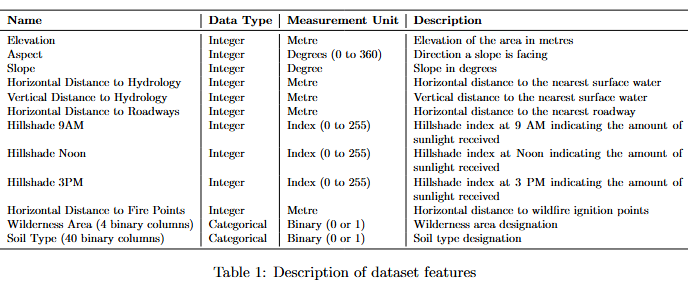
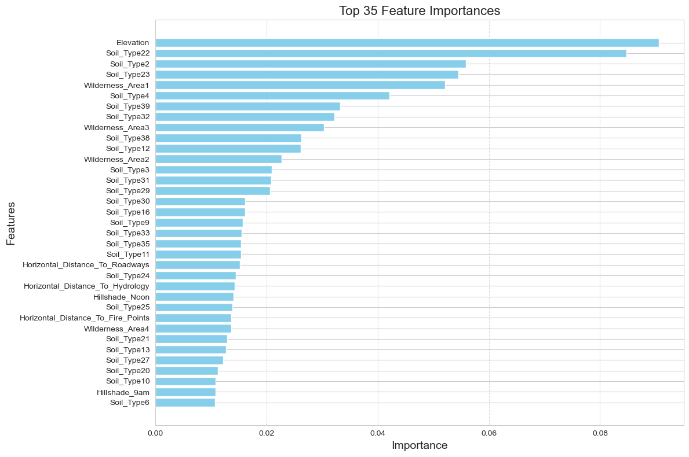
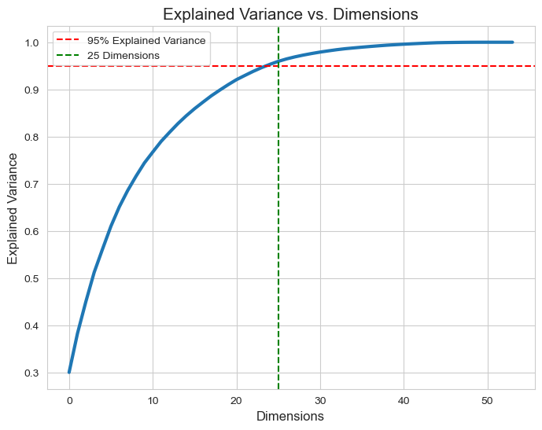
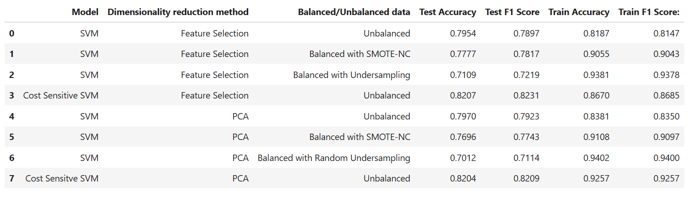

Forest Cover Classification using Support Vector Machines
Forest cover classification is crucial in environmental management and land use planning. In this study, we classify the Cover Type dataset from Roosevelt National Park, North Colorado, using Support Vector Machines (SVM). The dataset consists of 581012 instances and 54 features, including topographical, hydrological, and soil-related attributes. We explore the dataset, preprocess the features, and train an SVM classifier to predict the type of forest cover. We analyze feature correlations, class distributions, and the impact of class imbalance. The results demonstrate the effectiveness of SVM in accurately predicting forest cover types. repo
Dataset Exploration
Each row in the dataset represents a
specific geographical location or plot of land with
various environmental and soil characteristics. The
dataset has 581012 instances and 54 features.There are seven forest cover types, label-encoded
with numbers from 1 to 7.

Class imbalance is prevalent in the target variable.
There are significantly more instances of Lodgepole
Pine and Spruce/Fir type than the other types of
vegetation, as illustrated in the Bar graph.
Processing & Pre-processing
Several preprocessing steps were applied to enhance model performance. Since the dataset contained no missing or duplicate values, we proceeded with Min-Max scaling to normalize numerical features within the [0,1] range, ensuring uniformity for SVM training. The dataset was split into 70% training and 30% testing sets, and class imbalance was addressed using SMOTE-NC and Random Undersampling. For dimensionality reduction, we compared two approaches: PCA and feature selection using XGBClassifier feature importances, where selecting 35 features yielded the best F1-score.
 Support Vector Machine
For the forest cover dataset, we evaluated SVM performance on both balanced and unbalanced data. Hyperparameter tuning using GridSearchCV identified the optimal configuration as 𝐶 = 100 C=100, 𝛾 = 1 γ=1, and an RBF kernel, which was applied consistently across all model variations to ensure fair comparison. Models with Feature Selection generally outperformed those using PCA, particularly in terms of test F1 score. While balancing techniques such as SMOTE-NC and Random Undersampling improved training metrics, they often reduced test performance, suggesting overfitting. Cost-Sensitive SVM further addressed class imbalance by introducing different penalties for misclassifying minority versus majority classes, improving sensitivity to underrepresented samples.
Best Performing Models
The best overall performance was observed with the Cost Sensitive SVM using Feature Selection on unbalanced data, which achieved a high test accuracy of 82.07% and test F1 score of 82.31%. For balanced data, the SVM with SMOTE-NC and Feature Selection performed well, with a test accuracy of 77.77% and test F1 score of 78.17%. While these results were slightly lower than those with unbalanced data, they showed the benefits of balancing the data to handle class imbalances.
Conclusion
This study demonstrated the effectiveness of Support Vector Machines in classifying forest cover types, with a focus on improving the model’s performance on datasets with imbalance of classes. Several techniques were employed to improve model performance including feature selection, dimensionality reduction, class imbalance handling, and hyperparameter tuning. Feature Selection outperformed PCA, while Cost-Sensitive SVM achieved the best results, with 82.07% test acacuracy on unbalanced data. We did not specify a multi-class classification method, so Scikit-learn’s SVC used One-Versus-One (OvO) by default, training separate SVM models for each class pair. Overall, Feature Selection + Cost-Sensitive SVM proved most effective, avoiding overfitting while maintaining high accuracy. Future work can explore ensemble models or deep learning for further improvements.
I want to hear from you!
For any feedback, opinions on my project, job opportunities, and coffee meet-ups,
send me a message!